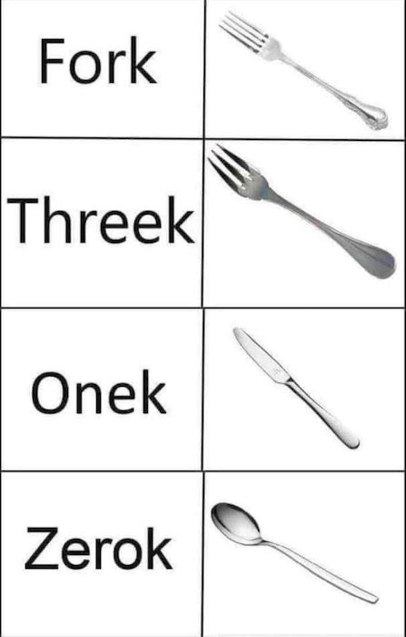
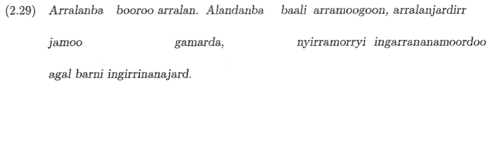
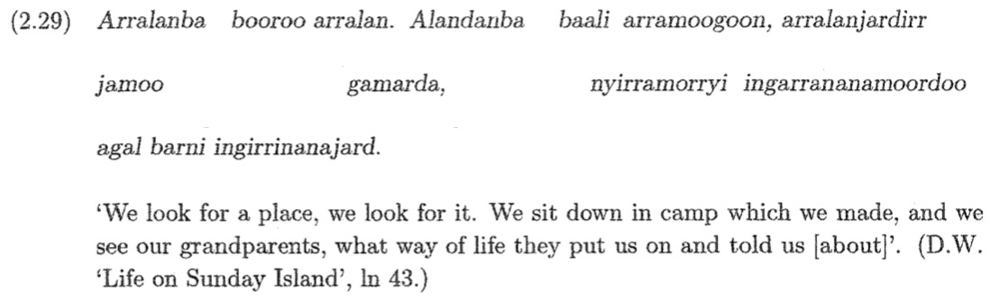
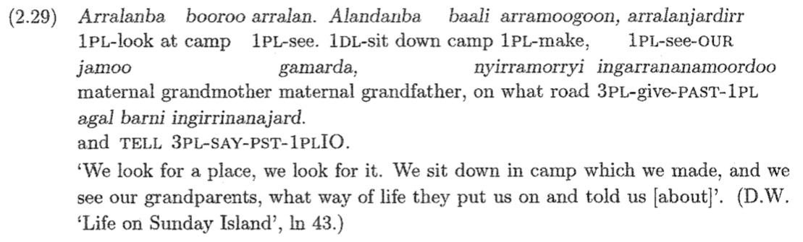

 --- ### Re-Register Your Clicker on Canvas, please! --- <h1>What are Words and Morphemes?</h1> <h3>Dr. Will Styler - LIGN 120</h3> --- ### Today's Plan - What are words? - Form and Meaning Relationships - Morphemes - Morpheme Variation and Allomorphy --- # What are words? --- There is only one way to address this question... -  --- ### Sugar Hill Gang - Rapper's Delight - “I said a hip, hop, the hibbie, the hibbie to the hip hip hop and you don’t stop the rocking to the bang bang boogie say up jump the boogie to the rhythm of the boogie the beat” - [ɑsɛdə hɪp hɑp ðəhɪbi ðe hɪbi təðə hɪp hɪp hɑpʰɑjɨ doʊn stɑp ðə ɹɑkɪn tʰəðə bejŋ bejŋ bʊɡi seɪ ʔʌp dʒʌmp ðə bʊɡi tʰəðə ɹɪðm ʌ ðʌ bʊɡidə bit] <audio controls> <source src="phonmedia/rappers_delight_excerpt.mp3" type="audio/mp3"> </audio> --- ### What defines a word? - A string of written characters delineated by blank spaces or punctuation? - "I said a hip hop..." - A string of discrete spoken phones or gesturual units delineated by pauses? - /dʒʌmp/ - /ɑsɛdə/? - A meaningful string of spoken phones? - hip, hop, stop - rock, ing? - hɪbi? - bʊɡi seɪ == 'geese'? ---  --- ### Are single words monolithic? - Compute - Computer - Computers - Computing - Will computered - Will solved the problem by computering - Will solved the problem computeringly - Will chose the computeringlyest method to solve it --- ### Are multiple words separate? - I cut the paper - I cut up the paper - I cut the paper up - I cut the paper across the middle - I cut across the middle of the road --- ### Can we even count them? <clk>A=1 word B=2 C=3 D=4 E=Dunno</clk> - Board - Plywood Board - Surfboard - Chalkboard - Replaceable Lightbulb - Non-Replaceable Battery --- ### 'Word' is a super weird idea --- ## This is why Morphology exists --- # Form and Meaning in Words --- ### Morphology studies the systematic relationships between form and meaning in words --- ### Some words share no form, but share elements of meaning - Cat and Feline - Fish and Bass - Rough and Jagged - *There's no interpretable patterns of form and meaning here!* --- ### Some words share no meaning, but share elements of form - Cat and Scatter - Fish and Standoffish - Rough and Truffle - *There's no interpretable patterns of form and meaning here!* --- ### Some words share elements of meaning *and* elements of form - Cat, Cats, Catty, Catnip, Cattish - Fishes, Fisher, Fishnet, Fisherman, Catfish - Rough, Roughs, Roughing, Roughly, Roughneck, Roughed Up, Rougher - Words seem to be in *families* - *There are patterns we can find here!* --- ### Some elements of a word's form seem to be able to recombine with each other - 'cat' can combine with -s, -er, -y, -ish, nip - '-s' can combine with fish, cat, dog, apartment - '-ly' can combine with rough, quick, thorough, sweet, morphological - *There are patterns we can find here!* --- ### ... and often, there are patterns in those attachments - cats, dishes, dogs, apartments, computers, phones - Xs = More than one of X - clicker, computer, driver, refrigerator, punner, runner - Xer = Somebody who does X - quickly, slowly, facetiously, unfortunately, crazily, randomly - Xly = In an X manner - *These are nothing but patterns in form and meaning!* --- ### There appear to exist systematic relationships between forms and meanings of words! --- ### These relationships make words feel analyzeable - 'Parts that occur as parts of other words or stand alone may be independent beasts' - cat+s - click+er - quick+ly - compute+r+ing+ly+est - BUT 'squirrel' --- ### Some pieces of words seem to mean something! - These pieces are called 'morphemes' - *All words seem to be built of morphemes!* --- ## Morpheme The smallest *meaningful* constituents of a linguistic expression - The 'atom' of linguistic meaning --- ### We subdivide these morphemes into types - **Bases** or **Stems** are the base from which other words are built - 'dance' in 'dancer' - 'cat' in 'cat+s' - 'computer' in 'computer+y' - **Roots** cannot be subdivided further - **Affixes** are added to bases to change the meaning - Prefixes, Suffixes, Infixes, Circumfixes - -er in 'dancer' - -s in 'cats' - -en in 'darken' - **Compounds** combine two bases - Backpack, Dishwasher, Dancewear --- ### We can also talk about how they attach to things - **Bound morphemes** cannot be used on their own - Affixes, like 'd or -er - **Free morphemes** can occur on their own - Like 'cat' or 'show' - **Clitics** are complicated as heck, but generally bound - We'll get to them later - Things like I<clr>'m</clr> and we<clr>'ve</clr> --- ### OK!! Let's find all the morphemes! --- # Identifying Morphemes and Analyzing Words --- ### Let's help out some aliens --- ### You can tell 'Will' from 'Fashion Accessories' by removing them - Removing his shoes means you have a Will and some shoes - The shoes are still functional for another person - The Will stands alone, and is still attachable to other shoes - Removing his watch means you have a Will and a watch - The watch still functional for another person - The Will stands alone, and is still attachable to other watches - Removing his torso means you have a very lengthy sentence in front of you - Neither subcomponent stands alone nor can be functionally attached to anything else --- <!--Testing --> # Travelerish - Removing 'ish' leaves 'traveler' and '-ish' - 'traveler' stands alone, and '-ish' has the same meaning attached to 'amateur' - Removing 'er' leaves 'travel' and '-er' - 'travel' stands alone, and '-er' attaches to 'refrigerate' or 'compute' - -er cannot stand alone, it is a **bound** morpheme (or 'affix') - Removing any component of 'travel' results in non-working forms - This morpheme is a **root**, it cannot be broken down further --- Let's try another word! --- ### Shamefulness - Removing -ness gives us 'shameful' and '-ness' - Removing -ful gives us 'shame' and '-ful' - You can't break 'shame', '-ful', or '-ness' any further --- OK! Let's try something different! --- # arralanjardirr (From Bardi, a language of Western Australia) ---  <small>From Bowern, C. (2004). Bardi verb morphology in historical perspective (Doctoral dissertation, Harvard University, pp. 47</small> ---  <small>From Bowern, C. (2004). Bardi verb morphology in historical perspective (Doctoral dissertation, Harvard University, pp. 47</small> ---  <small>From Bowern, C. (2004). Bardi verb morphology in historical perspective (Doctoral dissertation, Harvard University, pp. 47</small> --- ### In Bardi, 'Arra-' marks 1PL (among other morphemes!) - We can tell by noticing it across many forms with related meanings - It does not appear to change in these data! ---  --- ## It's not always that easy, alas! --- # Allomorphy --- ## Allomorphs The multiple forms which a given morpheme can take - "This single *underlying* morpheme could show up *on the surface* in one of several ways" --- # cats, dogs, dishes - Three roots ('cat', 'dog', 'dish') - One meaning shift ('PL') - kæt+s - dɑg+z - dɪʃ+ɪz - **Are these three affixes the same morpheme?** --- ## Phonological Allomorphy When a morpheme has different forms which are *phonologically predictable* - Changes to the morpheme can be *wholly described using phonological rules!* - -s, -z, and -ɪz are the three *allomorphs* of the English plural --- # Catch and Caught - \*catched and \*caugh - Feels similar to buy/bought, seek/sought - ... but batch and batched, and dispatch and dispatched - This is *not* phonologically conditioned - **Are catch and caugh- the same morpheme?** --- ## Weak Suppletive Allomorphy When a morpheme has allomorphs which cannot be described by phonological rules - Catch/Caught is 'weak suppletive allomorphy', as there are similarities across the forms - Catch/Caught share some segments, and there's a pattern with seek/sought etc --- # Bad/Wors- - \*Badder, \*Baddest, but \*Wor - Also worse, worsen, worst - ... but badly, baddish - Sad/Sadder/Saddest/Sadden/Sadly - Again, it's not phonological! - Good/Better/Best feels similar in approach - **Do these three forms share a morpheme?** --- ### Strong suppletive allomorphy - Strong suppletive allomorphy shows *no* relation of form between the allomorphs - Bad/Wors- share no phonological elements, but share many meaning elements - These are two allomorphs of the same stem --- <section data-background-color=#708cef></section> ### The change from Mouse -> Mice is an example of... A) Phonological Allomorphy B) Weak Suppletive Allomorphy C) Strong Suppletive Allomorphy --- ### The change from Mouse -> Mice is an example of... A) Phonological Allomorphy <clg>B) Weak Suppletive Allomorphy</clg> C) Strong Suppletive Allomorphy --- ## Conditioning Allomorphy --- ### Allomorphs are generally *conditioned* - There's a reason why a given variant shows up. - Very seldom do you see 'free variation', where any form is possible - Although sometimes it's hard to predict! --- ### Why do allomorphs appear when they do? - Sometimes it's phonological - Sometimes, it's morphological - Sometimes, it's lexical --- ### Phonologically Conditioned Allomorphy - Conditioned by phonological rules - Cats, Dogs and Dishes --- ### Morphologically Conditioned Allomorphy - Conditioned by morphological context - One form 'goes with' morphemes with specific grammatical or morphological properties - Good, Better, Best - In Spanish, voy, vas, but iré, irás, fui, fuiste --- ### Lexically Conditioned Allomorphy - Conditioned by some unknown property of the individual word - Unpredictable unless you know how *that specific word* patterns - break/broken, forsake/forsaken, walk/walked, creep/crept, drive/driven --- <section data-background-color=#708cef></section> ### The change from Mouse -> Mice is an example of... A) Phonologically Conditioned Allomorphy B) Lexically Conditioned Allomorphy C) Morphologically Conditioned Allomorphy --- ### So, we know that morphemes vary - What the different variation patterns are called - Phonological, Strong Suppletive, and Weak Suppletive Allomorphy - And what can condition the variation - Phonology, Morphology, and the Lexicon --- ### Wrapping Up - Words are made of morphemes - We can find these morphemes by looking for patterns among many words - Sometimes, those morphemes have variants called allomorphs - Those allomorphs can be similar in form to the original, or not at all - Different aspects of the language can trigger that allomorphy --- ## For Next Time - Complete the first discussion post and responses by Friday at Midnight - Re-Register your clickers in Canvas - We'll try and find some morphemes! --- <huge>Thank you!</huge>